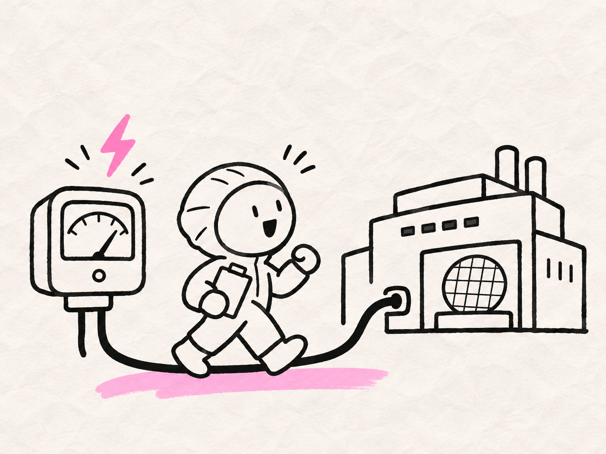

從一度電看懂
晶圓廠的碳排
從工廠辦公室的冷氣出發，學會算用電量、選排碳係數，並查核 AI 援引的證據。
晶圓廠在哪裡用電？
製程設備、無塵室和冷卻系統都要用電。功率表示用電的快慢，用電量是一段時間累積的電力消耗。
平均功率（kW）× 時間（小時）＝ 用電量（度）
假設工廠辦公室的冷氣在這一小時內的平均耗電功率是 1,000 瓦（1 kW），那一小時就用掉 1 度電（1 kWh）。
實際用電可看電表，並確認讀值涵蓋哪台設備、哪段時間。

外購電力屬於範疇二
工廠向外購電時，發電端的相關排放在工廠的盤查中列為間接排放。其他來源分屬不同範疇。
例如工廠自己燃燒燃料。
例如工廠購電供冷氣與設備使用。
例如原料生產和外包運輸。
用電量（度）× 排碳係數（公斤 CO₂e／度）＝ 排放估算（公斤 CO₂e）
CO₂e 是二氧化碳當量，把多種溫室氣體的影響換算到同一單位。
Wiki 依據 · S01 · Introduction，印刷第 6 頁 · S01 · 第 6 章 §6.6 和計算步驟，印刷第 49 頁 · S07 · 摘要，期刊第 9151 頁 · S04 · 預印本摘要
用一度電，要算多少排放？
環境部 Q7 列出民國 114 年（2025 年）的三種係數。單位都是 公斤 CO₂e／度。
用來檢視整體銷售電量的平均排碳。
適用於 Q7 所列企業用電類別。
適用於 Q7 所列住宅用電類別。
工廠辦公室的冷氣用掉 1 度電，該選哪一筆？
假想晶圓廠位於台灣，在 2025 年向公用售電業買電，屬於產業用戶。冷氣用掉 1 度電，排放估算為 1 度 × 公斤 CO₂e／度 ＝ 公斤 CO₂e。
這個排放量約相當於美國平均汽油乘用車行駛 公里的排放，僅供量級比較。美國 EPA 換算依據
Wiki 依據 · S02 · Q7，產業電力排碳係數 · S02 · Q7，公用售電業整體平均 · S02 · Q7，民生住宅電力排碳係數
用電年度決定適用係數
先確認用電發生在哪一年，再查同年度、同用戶類別的係數。
向公用售電業買電的產業用戶，採 2025 年度產業係數 公斤 CO₂e／度。
台灣住家向公用售電業買電。截至 2026 年 11 月 19 日，2026 年度住宅係數仍待公告。先用 2025 年度住宅係數暫估，1 度電約為 公斤 CO₂e。新係數公布後可重新換算。
能源署在 2026 年 6 月 2 日公布係數。環境部在 2026 年 7 月版問答集說明適用情境。兩份文件所列的產業與住宅係數都適用於 2025 年度用電。
晶圓廠為什麼省電？為什麼用 1,000 度來算？
假如冷卻設備能用更少的電完成相同的工作，工廠就能少買電。在相同盤查條件下，這些少買的電相當於多少外購電力排放？
台積電怎麼做？
台積電在 2025 年永續報告的節電措施中，列出以高效率設備汰換幫浦和冷水機。
這項措施關注的是完成相同工作能少用幾度電。再生電力占比則回答另一個問題：工廠用的電有多少來自再生能源？
台積電接下來的目標是什麼？
台積電設定兩項 2030 年目標。台灣與其他特定廠區在 2026–2030 年導入的新增節能措施，累積節能率目標為 7.5%。全公司生產營運據點則以再生能源供應 60% 用電為目標。
台積電在淨零路線圖中將 2040 年使用 100% 再生電力、2050 年達成淨零排放列為目標。
為什麼題目選 1,000 度？ 教學報告第 7 頁把它設為假想工廠的節電量，方便從「每一度」放大到一次改善的效果。假設 2025 年這座台灣晶圓廠在相同生產條件下少買了 1,000 度公用電力，我們還缺哪一個數字才能算排放？
要換算這 1,000 度，RAG 怎麼找係數？
還缺的是「每度電對應幾公斤 CO₂e」。Wiki 保存來源、摘要和原文頁碼。RAG（檢索增強生成）先找出能回答問題的片段，再把片段和問題一起交給 AI。
用題目的條件提問
「假設這座晶圓廠在台灣，於 2025 年向公用售電業買電，電價類別是高壓電力。每少買一度電，要用哪一個產業係數？」
先比對用電年度，再比對電價類別。搜尋「台積電」可以找到公司目標，而這一題需要的是能支持換算的係數。
公斤 CO₂e／度
民國 114 年度對應題目的 2025 年。Q7 將高壓電力用戶列入產業係數的適用範圍。
AI 示範回答 依環境部 Q7，這家工廠的用電年度和用戶類別都符合，因此採每度 公斤 CO₂e。把這個係數乘上題目給的節電量，就能估算外購電力的排放差額。
RAG 方法的 Wiki 依據 · S06 · §3.2，架構與模組 · S05 · Methods，RAG pipeline · S05 · Methods，Validation
少買 1,000 度電，排放估算少了多少？
回到這座假想晶圓廠。題目給了「少買幾度電」，環境部 Q7 則告訴我們「每度電按多少排放計算」。把這兩筆資料放進同一個算式。
① 節電量來自題目
1,000 度指在可比較的生產與運轉條件下，工廠少買的電量。實際做盤查時，要用經核對的用電差額取代這個假設。
② 係數來自 Wiki 證據
環境部 Q7 給的 2025 年產業係數是每度 公斤 CO₂e。用同一係數比較，才能單獨看出少用電的影響。
③ 相乘得到估算差額
用「度」乘上「公斤／度」，度數單位抵消，結果就是公斤。要換成公噸，再把公斤數除以 1,000。
1,000 度 × 公斤 CO₂e／度 ＝ 公斤 CO₂e ＝ 公噸 CO₂e
結果怎麼讀？ 在這組假設下，少買的電使這家工廠的範疇二排放估算減少 公斤 CO₂e。如果查到實際只少買 500 度，就把算式的 1,000 換成 500，估算差額也減半。
Wiki · 教學算例 · 環境部 Q7 係數 · 排放量公式 · 範疇二的定義
台積電報告的係數，可以直接拿來算嗎？
假設 AI 讀了台積電 2025 年永續報告，就建議我們的晶圓廠也用同一個數字。先看圖表下方的註腳，作者在那裡交代了數字適用於哪些廠區、採用哪一版資料。
公斤 CO₂e／度
台灣廠區（含研發中心）及采鈺公司採用經濟部民國 113 年（2024 年）公告的係數。
如果題目改問我們的工廠呢？
我們要估算台灣某廠 2025 年（民國 114 年）的外購電力。假設它向公用售電業買電，電價類別是高壓電力，符合環境部 Q7 的產業用戶條件。
回答「台積電報告當時用多少」可以引用註 2。回答「這座假想工廠該用多少」要引用 Q7，採 公斤 CO₂e／度。
如果直接照抄呢？ 同樣少用 1,000 度，套台積電報告的數字會算出 公斤 CO₂e。本案例依 Q7 算出 公斤 CO₂e。光是換了係數，兩筆估算就相差 公斤 CO₂e。
怎麼核對一筆排放估算？
有人交來一句「晶圓廠的排放估算少了 公斤 CO₂e」。要判斷能不能引用，得查出工廠少用了幾度電，以及每度電按什麼係數換算。
核對用電量
查電表或電費單，對齊廠區、期間和單位。本例的「少用 1,000 度」是題目給的假設。
確認誰買的電
查用電年度、供電來源和電價類別。本例是 2025 年台灣晶圓廠向公用售電業買的高壓電力。
回原文選係數
從 Wiki 點回環境部 Q7 第 8 頁，核對年度與用戶類別，確認每度採 公斤 CO₂e。
重算並留紀錄
1,000 度乘上係數，得到 公斤 CO₂e。把算式、用電假設和係數頁碼一起存下來。
如果電費單只寫「1,000 度」呢？ 先確認那是整月用電，還是兩個可比情境之間少用的度數。若只知道整月用電，乘上係數只能估算當月排放，還缺少比較依據才能說「少了多少」。
日後有新係數時，另存適用年度與版本，讓其他人仍能依原始資料重算這一筆。
改變用電量或係數，估算會差多少？
少用的度數 × 每度電的排碳係數 ＝ 外購電力的排放估算差額
基準是少用 1,000 度，每度採 公斤 CO₂e。兩個滑桿各做一次獨立比較。每次保留一個基準值，才能看出另一項改變造成多少差異。
固定環境部 Q7 的 2025 年產業係數。試著把少用的度數減半到 500 度。
固定少用 1,000 度。把係數調到每度 0.400 公斤 CO₂e，模擬同樣度數在另一個假設下的估算。
三條長條使用同一刻度。將 A 或 B 與基準比較，長條越短，代表該情境估算少掉的排放量越小。
怎麼知道晶圓廠今天用電偏高？
前一頁先假設「少用 1,000 度」，再算碳排。到了現場，要和什麼相比，才知道多用或少用了電？ 晶圓廠希望在維持產量、品質和無塵室條件下，減少可避免的耗電。遇到增產或天氣炎熱，工廠本來就可能需要更多電。
超出預期的部分 ＋2,000 度
預期的 10,000 度怎麼來？
找出同一只電表過去的每日用電，再依今天的產量、排班和氣溫，估算這樣的一天通常會用幾度。這個用來比較的預期值叫作用電基準。
圖中數值都是教學假設。實際用電減去預期用電，12,000 − 10,000 ＝ ＋2,000 度，這個差叫作「殘差」。正號表示高於預期。要知道其中有多少可以節省，還得查當天發生了什麼。
第一件事是核對電表和時段。 找出 12,000 度的電表編號、起訖時間和單位，確認它和基準都是同一廠區、同一只表的 24 小時用電量（kWh）。如果拿全廠用電去比一棟廠房的基準，光是計量範圍不同就會出現差額。
多出的 2,000 度，怎麼查原因？
沿用前頁的假設案例。如果由能查資料的 AI 助理（AI Agent）協助，廠務人員可以請它把電表、班表和設備紀錄按時間排在一起，再逐步判讀。
| 查核順序 | AI Agent 可以找什麼證據？ | 人員怎麼判斷？為什麼先查？ |
|---|---|---|
| 1 · 電表與時段 | 調出同一只表的逐時用電，與基準使用的表號、日期和單位並列，標出缺值或重複的時段。 | 先核對原始讀數。若一個小時被加總兩次，先更正再重算，以免把資料錯誤當成設備耗電。 |
| 2 · 生產與天氣 | 把偏高時段與實際產量、加班班表和室外氣溫對齊，再列出它們和原先預估條件的差異。 | 找當班人員確認是否臨時增產或延長運轉，並查看高溫是否增加冷卻需求。條件有變就更新預期值，檢查還差幾度。 |
| 3 · 設備運轉 | 若差額仍大，找出用電增加的設備分表，對照冷卻主機啟停、設備待機與維修紀錄，附上時段和來源。 | 核對設備當時是否仍需供冷或維持製程。由廠務人員現場確認後，才判斷哪些運轉可以調整。 |
假設晚間 8–10 點總表用電升高，班表也記了加班。 兩筆紀錄指向同一時段，加班值得先查。若缺少冷卻主機的分表資料，Agent 應列出待補紀錄，人員才能查明冷卻設備占了多少。
練習計算與查證
三小時內至少完成 7 批，如何讓排放估算最低？
假設一台檢測設備須連續運轉 3 小時，每小時選一種模式。標準模式每小時完成 2 批，平均功率 2 kW。快速模式每小時完成 3 批，平均功率 3.5 kW。兩種模式品質相同，切換耗時與耗電忽略。這些都是本題的教學設定。
沿用 2025 年台灣晶圓廠向公用售電業購電的產業係數，每度 公斤 CO₂e。先用「功率 × 時數」算出兩種模式各用幾度，再加總並乘以係數。請比較四種排程，找出達標方案中的最低值。
所選排程的計算
- 完成批數
- 設備用電
- 排放估算
批數由 0 到 9，虛線是交貨門檻（7 批）。
AI 引用台積電報告的係數，能直接用在這一題嗎？
AI 回答「台積電報告裡每度是 公斤 CO₂e，所以這台設備也採同一係數」。請替廠務人員查證。設備位於台灣，用電發生在 2025 年（民國 114 年），由公用售電業供電，電費單列為高壓電力。
選項中的單位都是公斤 CO₂e／度。選擇時，請核對原文說的是哪一年、哪一種用戶，以及這個數字用來回答什麼問題。